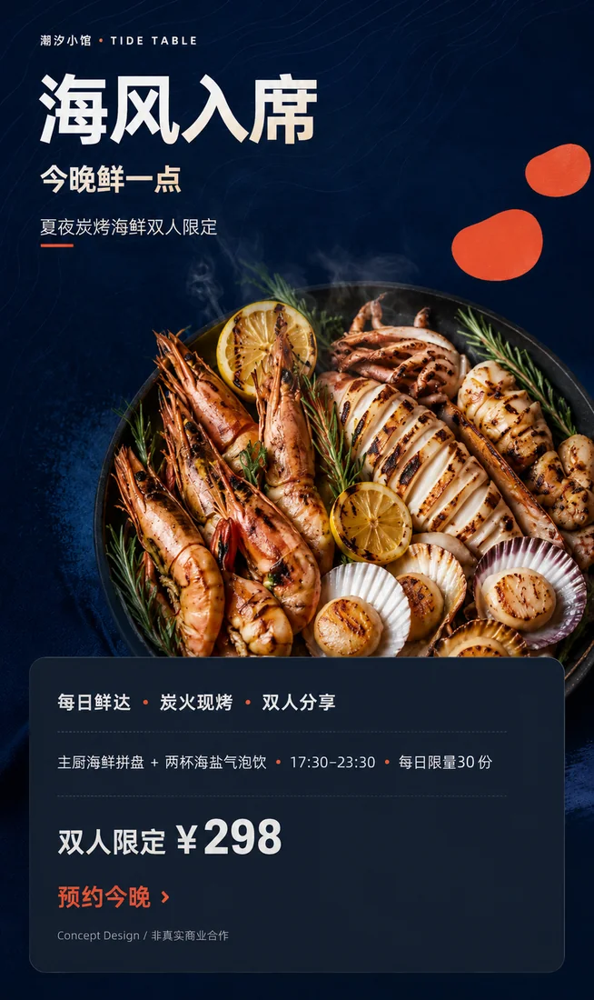
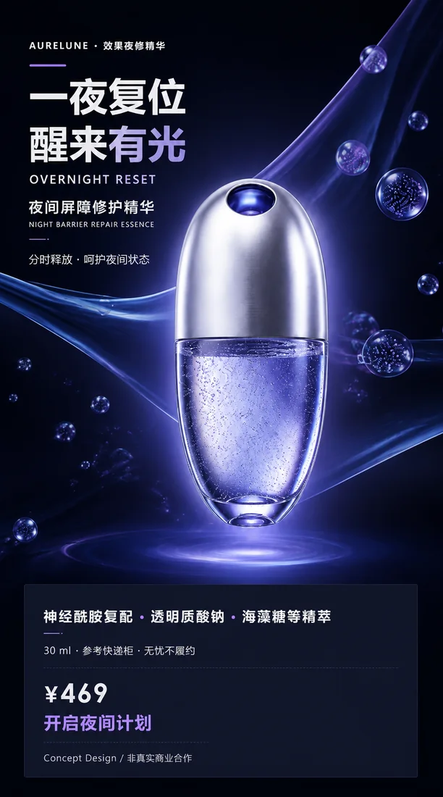
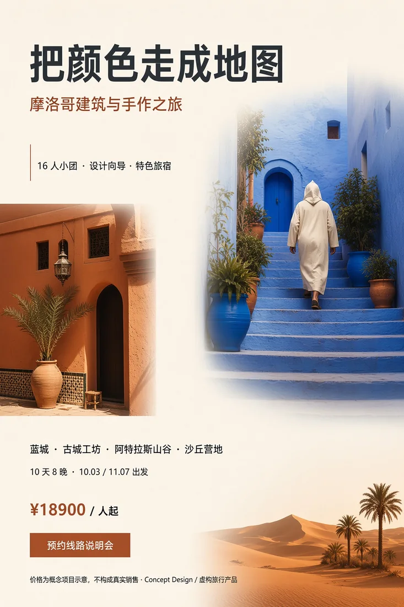

商业视觉作品选集 2026
Selected Works20
从餐饮风味到旅行叙事，
以鲜明构图与清晰信息层级，
构建有记忆点的商业画面。
Travel · Lifestyle



04Project
Groups
Groups
20Selected
Pieces
Pieces
01 / Profile
设计不只是让信息
被看见，更要让它
被理解、被记住。
20 件商业视觉作品围绕风味、产品、目的地与生活方式展开， 通过图像叙事、色彩氛围和清晰的信息层级建立鲜明识别。
- 餐饮与风味传播
- 产品与品牌视觉
- 旅行与目的地叙事
- 运动与生活方式
02 / Selected Projects
精选项目
点击任意作品可查看大图
03 / Details
视觉系统，
服务真实场景。
每一个主题都有自己的情绪与阅读节奏。作品从商业信息出发， 用画面氛围、字体关系与色彩对比把卖点转化为直观感受。
01风味传播Flavor Stories
02产品视觉Product Visuals
03旅行叙事Travel Stories
04生活方式Active Lifestyle
End / Selected Works